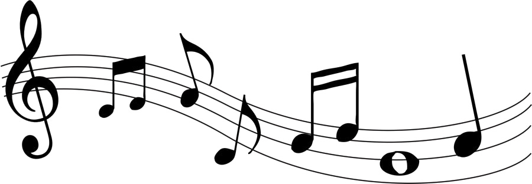

Music Analysis
What A Wonderful World
In this song I can hear A Bass setting a slow rhythm, a violin, Drumset, Trumpet and a flute.
Armstrong's combination in this song creates a sense of harmony between his voice and the melody of the instruments; it feels almost as if he is accompanied by the notes and vice versa.
Chimes Blues
In this track I can hear multiple instruments, I can hear a Bass, a Trombone, Piano, Banjo,Tuba, Drums, and a Clarinet. In this song there’s no lyrics, but the song itself has a very classic melody, I can also say that some instruments in the background, especially the Piano and the Bass play the same rhythm throughout the entire song.
Snake Rag
In this song I can hear a Bass in the background, and other instruments such as the Piano, hte Trombone, Clarinet, Drums, Cornet and theTrumpet.
If I am not wrong, I believe that there’s already a melody assigned because it sounds chaotic but there’s also harmony, while I believe there’s also improvisation for the solos.
Copenhagen
In this song I can hear Bass, Piano,Trumpet, Trombone and Drums. This song sound like something you would hear in a cartoon show, I believe there’s improvisation for solos while also keeping the same rhythm in the background, but overall I would say it sounds chaotic but understandable at the same time.
Hotter Than That
For this song I can hear a bass setting the rhythm, I can also hear
a clarinet which I believe is the instrument that takes the lead since the beginning and is probably pure improvisation accompanied with vocals, I can also hear a Trumpet, piano and a trombone.
For this song I hear the same rhythm from the instruments in the back, for example the Bass, while multiple solos take turns.
Instruments Used
Pictures of Artists